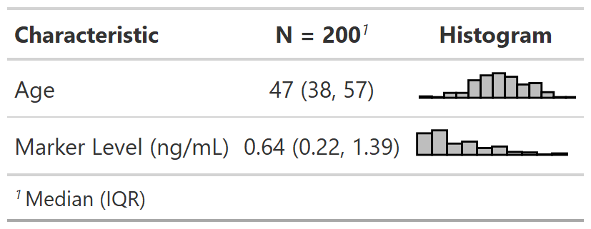

This function wraps gtExtras::gt_plt_dist() and adds a new column
illustrating the distribution of a continuous variable. This function converts
the gtsummary table into a gt table.
add_sparkline(
x,
type = c("boxplot", "histogram", "rug_strip", "density", "sparkline"),
column_header = NULL,
same_limit = FALSE,
...
)'tbl_summary' object
sparkline type. Must be one of c("boxplot", "histogram", "rug_strip", "density", "sparkline")
string indicating column header
A logical indicating that the plots will use the same axis range (TRUE) or have individual axis ranges (FALSE).
Arguments passed on to gtExtras::gt_plt_dist
fig_dimA vector of two numbers indicating the height/width of the plot in mm at a DPI of 25.4, defaults to c(5,30)
line_colorColor for the line, defaults to "black". Accepts a named color (eg 'blue') or a hex color.
fill_colorColor for the fill of histograms/density plots, defaults to "grey". Accepts a named color (eg 'blue') or a hex color.
bwThe bandwidth or binwidth, passed to density() or ggplot2::geom_histogram(). If type = "density", then bw is passed to the bw argument, if type = "histogram", then bw is passed to the binwidth argument.
trimA logical indicating whether to trim the values in type = "density" to a slight expansion beyond the observable range. Can help with long tails in density plots.
a gt table
Example 1

Other gtsummary-related functions:
add_inline_forest_plot(),
as_ggplot(),
bold_italicize_group_labels(),
logistic_reg_adj_diff(),
style_tbl_compact(),
tbl_likert(),
theme_gtsummary_msk()